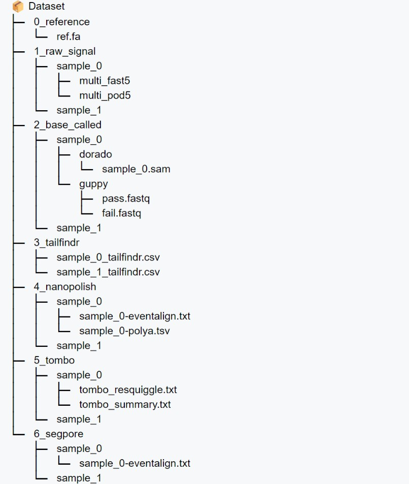

Dataset overview & statistics
Sixteen public datasets from six species, all based on R9.4 chemistry, re-processed from raw fast5 with the unified pipeline. Filter by species, molecule type or task; click a column to sort.
Two kinds of data. Raw data (fast5) stays at the original repositories and is indexed on the raw data download page. Processed data and benchmark results produced by the unified pipeline are hosted on Zenodo (DOI 10.5281/zenodo.10889896).
Dataset overview
Task columns: BC base calling · PD polyA detection · SA segmentation & event alignment · MD modification detection. For MD the cell shows which modification the sample carries ground truth for.
| Dataset | Published | Accession | Species | Type | Sample | Flow cell | Kit | BC | PD | SA | MD |
|---|---|---|---|---|---|---|---|---|---|---|---|
| ont_ployA_standard | 2018-09 | PRJEB28423 | Synthetic | RNA | 10xpolyA | flo-min106 | sqk-rna001 | ✓ | ✓ | ✓ | – |
| ont_ployA_standard | 2018-09 | PRJEB28423 | Synthetic | RNA | 15xpolyA | flo-min106 | sqk-rna001 | ✓ | ✓ | ✓ | – |
| ont_ployA_standard | 2018-09 | PRJEB28423 | Synthetic | RNA | 30xpolyA | flo-min106 | sqk-rna001 | ✓ | ✓ | ✓ | – |
| ont_ployA_standard | 2018-09 | PRJEB28423 | Synthetic | RNA | 60xpolyA | flo-min106 | sqk-rna001 | ✓ | ✓ | ✓ | – |
| ont_ployA_standard | 2018-09 | PRJEB28423 | Synthetic | RNA | 80xpolyA | flo-min106 | sqk-rna001 | ✓ | ✓ | ✓ | – |
| ont_ployA_standard | 2018-09 | PRJEB28423 | Synthetic | RNA | 100xpolyA | flo-min106 | sqk-rna001 | ✓ | ✓ | ✓ | – |
| eGFP_polyA_DNA | 2019-06 | PRJEB31806 | Synthetic | cDNA | dna_rep1_sqklsk108_flipflop | flo-min106 | sqk-lsk108 | ✓ | ✓ | ✓ | – |
| eGFP_polyA_DNA | 2019-06 | PRJEB31806 | Synthetic | cDNA | dna_rep2_sqklsk109_flipflop | flo-min106 | sqk-lsk109 | ✓ | ✓ | ✓ | – |
| eGFP_polyA_RNA | 2019-06 | PRJEB31806 | Synthetic | RNA | rna_rep1_sqkrna001_plus_rt | flo-min106 | sqk-rna001 | ✓ | ✓ | ✓ | – |
| eGFP_polyA_RNA | 2019-06 | PRJEB31806 | Synthetic | RNA | rna_rep2_sqkrna001_plus_rt | flo-min106 | sqk-rna001 | ✓ | ✓ | ✓ | – |
| eGFP_polyA_RNA | 2019-06 | PRJEB31806 | Synthetic | RNA | rna_rep3_sqkrna002_minus_rt | flo-min106 | sqk-rna002 | ✓ | ✓ | ✓ | – |
| lambda_phage | 2021-03 | PRJNA926802 | lambda phage | DNA | VER5940 | flo-flg001 | sqk-lsk109 | ✓ | – | ✓ | – |
| NA12878 | 2019-06 | PRJEB23027 | Homo sapiens | DNA | FAB42828 | flo-min106 | sqk-lsk108 | ✓ | – | ✓ | – |
| NA12878 | 2019-06 | PRJEB23027 | Homo sapiens | DNA | FAF04090 | flo-min106 | sqk-lsk108 | ✓ | – | ✓ | – |
| NA12878 | 2019-06 | PRJEB23027 | Homo sapiens | DNA | FAF09968 | flo-min106 | sqk-lsk108 | ✓ | – | ✓ | – |
| curlcake | 2019-07 | PRJNA511582 | Synthetic | RNA | m6A-mod-rep1 | flo-min106 | sqk-rna001 | ✓ | – | ✓ | m6A |
| curlcake | 2019-07 | PRJNA511582 | Synthetic | RNA | m6A-mod-rep2 | flo-min106 | sqk-rna001 | ✓ | – | ✓ | m6A |
| curlcake | 2019-07 | PRJNA511582 | Synthetic | RNA | non-mod-rep1 | flo-min106 | sqk-rna001 | ✓ | – | ✓ | – |
| curlcake | 2019-07 | PRJNA511582 | Synthetic | RNA | non-mod-rep2 | flo-min106 | sqk-rna001 | ✓ | – | ✓ | – |
| scBY4741_m5C | 2021-06 | PRJNA563591 | Synthetic | RNA | m5C_modified | flo-min106 | sqk-rna001 | ✓ | – | ✓ | m5C |
| scBY4741_hm5C | 2021-06 | PRJNA548268 | Synthetic | RNA | hm5C_modified | flo-min106 | sqk-rna001 | ✓ | – | ✓ | hm5C |
| scBY4741_pU | 2021-02 | PRJNA549001 | Synthetic | RNA | pU_modified | flo-min106 | sqk-rna001 | ✓ | – | ✓ | Ψ |
| hct116 | 2021-04 | PRJEB44348 | Homo sapiens | RNA | HCT-WT-rep1 | flo-min106 | sqk-rna002 | ✓ | – | ✓ | m6A |
| hct116 | 2021-04 | PRJEB44348 | Homo sapiens | RNA | HCT-WT-rep2 | flo-min106 | sqk-rna002 | ✓ | – | ✓ | m6A |
| hct116 | 2021-04 | PRJEB44348 | Homo sapiens | RNA | HCT-WT-rep3 | flo-min106 | sqk-rna002 | ✓ | – | ✓ | m6A |
| hek293t_wt | 2021-01 | PRJEB40872 | Homo sapiens | RNA | HEK293T-WT-rep1 | flo-min106 | sqk-rna001 | ✓ | – | ✓ | m6A |
| hek293t_wt | 2021-01 | PRJEB40872 | Homo sapiens | RNA | HEK293T-WT-rep2 | flo-min106 | sqk-rna002 | ✓ | – | ✓ | m6A |
| hek293t_wt | 2021-01 | PRJEB40872 | Homo sapiens | RNA | HEK293T-WT-rep3 | flo-min106 | sqk-rna002 | ✓ | – | ✓ | m6A |
| hek293t_ko | 2021-01 | PRJEB40872 | Homo sapiens | RNA | HEK293T-Mettl3-KO-rep1 | flo-min106 | sqk-rna001 | ✓ | – | ✓ | – |
| hek293t_ko | 2021-01 | PRJEB40872 | Homo sapiens | RNA | HEK293T-Mettl3-KO-rep2 | flo-min106 | sqk-rna002 | ✓ | – | ✓ | – |
| hek293t_ko | 2021-01 | PRJEB40872 | Homo sapiens | RNA | HEK293T-Mettl3-KO-rep3 | flo-min106 | sqk-rna002 | ✓ | – | ✓ | – |
| mESCs_eligos | 2020-10 | PRJNA497103 · SRP166020 | Mus musculus | RNA | mESCs_Mettl3_WT | flo-min106 | sqk-rna002 | ✓ | – | ✓ | m6A |
| mESCs_eligos | 2020-10 | PRJNA497103 · SRP166020 | Mus musculus | RNA | mESCs_Mettl3_KO | flo-min106 | sqk-rna002 | ✓ | – | ✓ | – |
| ecoli_eligos | 2020-08 | PRJNA497103 · SRP166020 | Escherichia coli | RNA | IVT_Inosine | flo-min106 | sqk-rna002 | ✓ | – | ✓ | Inosine |
| ecoli_eligos | 2020-08 | PRJNA497103 · SRP166020 | Escherichia coli | RNA | IVT_m5C | flo-min106 | sqk-rna002 | ✓ | – | ✓ | m5C |
| ecoli_eligos | 2020-08 | PRJNA497103 · SRP166020 | Escherichia coli | RNA | IVT_m6A | flo-min106 | sqk-rna002 | ✓ | – | ✓ | m6A |
| ecoli_eligos | 2020-08 | PRJNA497103 · SRP166020 | Escherichia coli | RNA | IVT_normalA | flo-min106 | sqk-rna002 | ✓ | – | ✓ | – |
| ecoli_eligos | 2020-08 | PRJNA497103 · SRP166020 | Escherichia coli | RNA | IVT_normalC | flo-min106 | sqk-rna002 | ✓ | – | ✓ | – |
| dinopore_ivt | 2023-01 | SRP363295 | Synthetic | RNA | gBlock_pureI | flo-min106 | sqk-rna001 | ✓ | – | ✓ | Inosine |
| dinopore_ivt | 2023-01 | SRP363295 | Synthetic | RNA | gBlock_G | flo-min106 | sqk-rna001 | ✓ | – | ✓ | – |
| dinopore_xenopus | 2022-04 | SRP363295 | Xenopus lavies | RNA | rep3_stage1_20200812 | flo-min106 | sqk-rna002 | ✓ | – | ✓ | Inosine |
| dinopore_xenopus | 2022-04 | SRP363295 | Xenopus lavies | RNA | rep3_stage1_20201005 | flo-min106 | sqk-rna002 | ✓ | – | ✓ | Inosine |
| dinopore_xenopus | 2022-04 | SRP363295 | Xenopus lavies | RNA | rep3_stage9_20200812 | flo-min106 | sqk-rna002 | ✓ | – | ✓ | Inosine |
| dinopore_xenopus | 2022-04 | SRP363295 | Xenopus lavies | RNA | rep3_stage9_20201008 | flo-min106 | sqk-rna002 | ✓ | – | ✓ | Inosine |
Dataset statistics
Read counts and average lengths come from the unified pipeline. * Base-called sequence lengths are from Guppy 6.0.1.
| Dataset | Type | Raw size | Sample | # multi-fast5 | # reads | Avg. signal length | Avg. base length* |
|---|---|---|---|---|---|---|---|
| ont_ployA_standard | RNA | 81 GB | 10xpolyA | 24 | 92,428 | 59,001.8 | 1,207.2 |
| ont_ployA_standard | RNA | 15xpolyA | 23 | 91,084 | 56,518.5 | 1,216.3 | |
| ont_ployA_standard | RNA | 30xpolyA | 16 | 63,886 | 54,111.5 | 1,192.7 | |
| ont_ployA_standard | RNA | 60xpolyA | 28 | 108,314 | 57,397.1 | 1,172.6 | |
| ont_ployA_standard | RNA | 80xpolyA | 103 | 409,634 | 47,166.3 | 859.3 | |
| ont_ployA_standard | RNA | 100xpolyA | 70 | 279,895 | 61,938.0 | 1,173.4 | |
| eGFP_polyA_DNA | cDNA | 43 GB | dna_rep1_sqklsk108_flipflop | 121 | 484,000 | 8,956.7 | 763.5 |
| eGFP_polyA_DNA | cDNA | dna_rep2_sqklsk109_flipflop | 71 | 280,428 | 21,619.2 | 1,667.1 | |
| eGFP_polyA_RNA | RNA | 529 GB | rna_rep1_sqkrna001_plus_rt | 231 | 922,826 | 57,068.7 | 1,126.5 |
| eGFP_polyA_RNA | RNA | rna_rep2_sqkrna001_plus_rt | 364 | 1,452,042 | 50,103.4 | 928.4 | |
| eGFP_polyA_RNA | RNA | rna_rep3_sqkrna002_minus_rt | 149 | 592,571 | 30,888.6 | 465.0 | |
| lambda_phage | DNA | 19 GB | VER5940 | 114 | 113,514 | 116,272.6 | 9,562.0 |
| NA12878 | DNA | 68 GB | FAB42828 | 9 | 33,633 | 131,148.9 | 6,810.4 |
| NA12878 | DNA | FAF04090 | 24 | 62,833 | 509,826.9 | 17,801.2 | |
| NA12878 | DNA | FAF09968 | 6 | 21,947 | 334,921.0 | 53,615.0 | |
| curlcake | RNA | 584 GB | m6A-mod-rep1 | 34 | 134,374 | 69,745.8 | 850.2 |
| curlcake | RNA | m6A-mod-rep2 | 160 | 638,860 | 58,341.9 | 835.0 | |
| curlcake | RNA | non-mod-rep1 | 17 | 66,736 | 57,930.6 | 867.0 | |
| curlcake | RNA | non-mod-rep2 | 212 | 846,595 | 61,719.5 | 1,066.5 | |
| scBY4741_m5C | RNA | 37 GB | m5C_modified | 104 | 415,453 | 40,792.4 | 539.9 |
| scBY4741_hm5C | RNA | 17 GB | hm5C_modified | 28 | 111,015 | 81,528.2 | 1,022.9 |
| scBY4741_pU | RNA | 4 GB | pU_modified | 11 | 42,386 | 46,652.9 | 475.2 |
| hct116 | RNA | 346 GB | HCT-WT-rep1 | 247 | 987,488 | 66,363.1 | 1,217.4 |
| hct116 | RNA | HCT-WT-rep2 | 254 | 1,015,893 | 57,524.5 | 1,023.0 | |
| hct116 | RNA | HCT-WT-rep3 | 419 | 1,673,394 | 65,628.3 | 1,153.2 | |
| hek293t_wt | RNA | 224 GB | HEK293T-WT-rep1 | 261 | 1,040,661 | 60,169.8 | 939.8 |
| hek293t_wt | RNA | HEK293T-WT-rep2 | 349 | 1,396,000 | 54,077.7 | 1,077.6 | |
| hek293t_wt | RNA | HEK293T-WT-rep3 | 133 | 513,561 | 56,785.6 | 1,005.1 | |
| hek293t_ko | RNA | 356 GB | HEK293T-Mettl3-KO-rep1 | 373 | 1,490,210 | 58,140.7 | 952.6 |
| hek293t_ko | RNA | HEK293T-Mettl3-KO-rep2 | 454 | 1,815,589 | 52,569.8 | 993.9 | |
| hek293t_ko | RNA | HEK293T-Mettl3-KO-rep3 | 421 | 1,677,075 | 50,186.0 | 970.3 | |
| mESCs_eligos | RNA | 220 GB | mESCs_Mettl3_WT | 791 | 3,163,286 | 33,202.3 | 526.2 |
| mESCs_eligos | RNA | mESCs_Mettl3_KO | 382 | 1,527,561 | 28,350.7 | 437.7 | |
| ecoli_eligos | RNA | 214 GB | IVT_Inosine | 203 | 811,953 | 32,978.0 | 845.4 |
| ecoli_eligos | RNA | IVT_m5C | 144 | 573,674 | 45,397.1 | 719.5 | |
| ecoli_eligos | RNA | IVT_m6A | 371 | 1,482,437 | 41,642.1 | 708.3 | |
| ecoli_eligos | RNA | IVT_normalA | 96 | 383,209 | 33,499.8 | 620.8 | |
| ecoli_eligos | RNA | IVT_normalC | 114 | 452,806 | 44,566.8 | 731.8 | |
| dinopore_ivt | RNA | 15 GB | gBlock_pureI | 47 | 165,628 | 29,869.7 | 450.3 |
| dinopore_ivt | RNA | gBlock_G | 43 | 150,405 | 32,047.1 | 641.2 | |
| dinopore_xenopus | RNA | 399 GB | rep3_stage1_20200812 | 363 | 1,451,289 | 46,688.4 | 917.2 |
| dinopore_xenopus | RNA | rep3_stage1_20201005 | 454 | 1,812,200 | 27,213.7 | 532.6 | |
| dinopore_xenopus | RNA | rep3_stage9_20200812 | 391 | 1,560,032 | 44,621.8 | 894.4 | |
| dinopore_xenopus | RNA | rep3_stage9_20201008 | 313 | 1,251,130 | 31,185.5 | 448.1 |
Processed dataset download
All processed data can be downloaded from Zenodo record 10889896. The dataset is dynamic: the current version is 1.0.0, and processed results for additional software are added over time. A small demo dataset is the fastest way to see every intermediate format.
- Demo dataset, clean (raw fast5 + reference)319.1 MBDownload
- Demo dataset, fully processed (all six pipeline steps)1.1 GBDownload
- DNA base calling benchmark (NA12878)70.6 GBDownload
- RNA base calling benchmark (hek293t)81.9 GBDownload
- PolyA benchmark (ont_ployA_standard)Download
- All files and versionsZenodoBrowse record
Processed dataset structure
Every dataset follows the same directory layout, numbered by pipeline step. Not all datasets contain all modules: Tailfindr and SegPore cannot process DNA, so DNA datasets usually lack 3_tailfindr and 6_segpore. The example below has two samples.
<dataset>/
├── 0_reference/
│ └── ref.fa # reference genome / transcriptome
├── 1_raw_signal/
│ ├── single_fast5/ # as downloaded (if applicable)
│ ├── multi_fast5/ # standardized input for all tools
│ └── multi_pod5/ # for Dorado
├── 2_base_called/
│ ├── guppy/{pass,fail,workspace}/
│ ├── dorado/dorado.bam
│ ├── <dataset>.fastq
│ └── reads-ref.sorted.filter.bam # minimap2 + samtools
├── 3_tailfindr/
│ └── tails.csv
├── 4_nanopolish/
│ ├── polya.tsv, polya-pass-only-with-head.tsv
│ ├── eventalign.txt, eventalign_combined.txt
│ └── summary.txt
├── 5_tombo/
│ └── single_reads/{tombo_resquiggle.txt, tombo_summary.txt}
└── 6_segpore/
Dataset documentation
Collection criteria. Raw fast5/pod5 must be freely downloadable from a public repository; datasets should span diverse species; common RNA modifications (m6A, m5C, hm5C, inosine, pseudouridine) should be covered; and ground truth should be available for several tasks. All collected datasets use R9.4 or R9.4.1 chemistry.
Intended use. Developing and benchmarking machine-learning methods for the four tasks. Uses that re-identify individuals or contradict the original data providers' intent are out of scope; see the paper's discussion of societal impact.
Licensing and maintenance. Processed data: CC BY 4.0. Software: Apache 2.0. Data are hosted on Zenodo for long-term preservation; this website and the GitHub repository are maintained by the authors. A machine-readable datasets.json and schema.org Dataset metadata (embedded in this page) describe the collection.